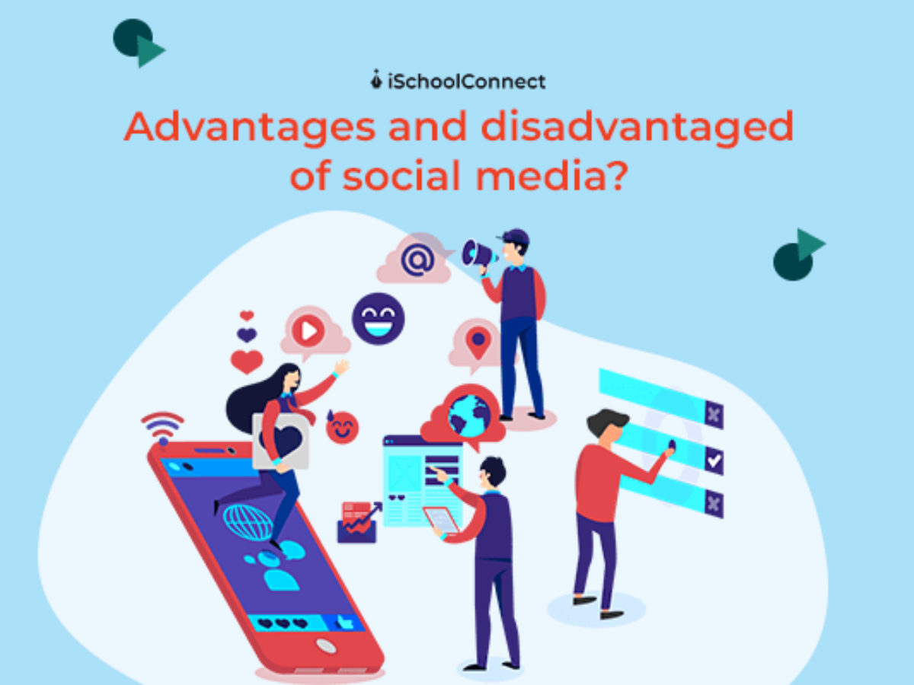
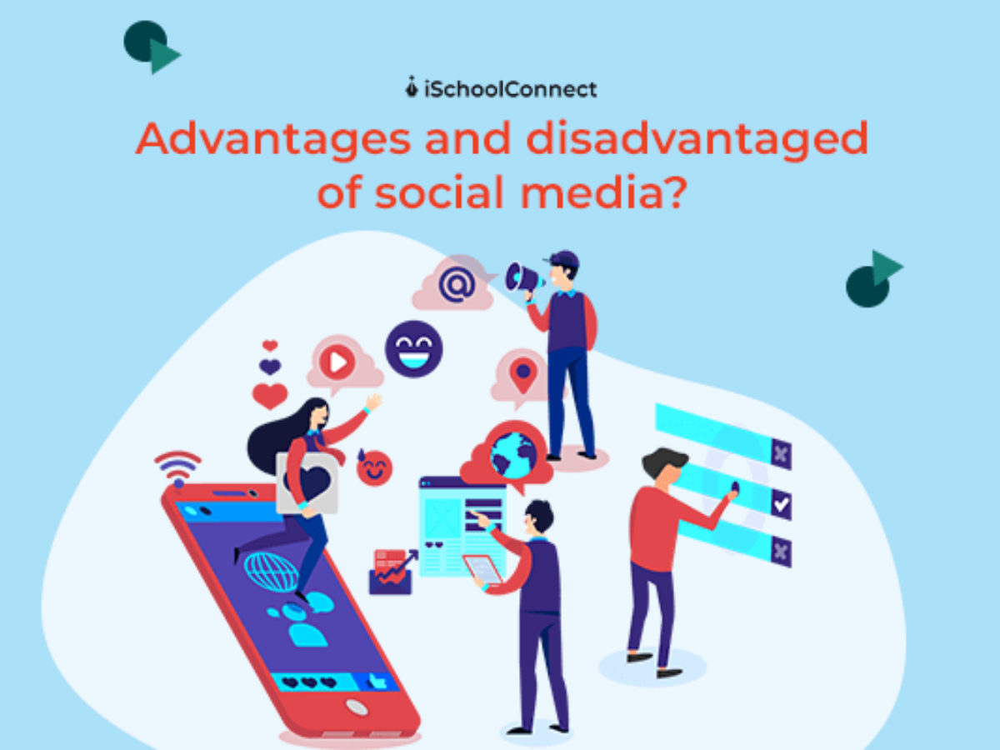

L'Évolution de l'Intelligence Artificielle
#1
Comment l'IA transforme-t-elle notre monde numérique ?
Découvrez son évolution, ses impacts et son avenir
Découvrez des thématiques variées couvrant l’évolution du numérique, l’intelligence artificielle, la cybersécurité, le développement web, les réseaux, et bien plus encore. Ces sujets offrent un regard approfondi sur les tendances et innovations qui transforment notre quotidien et nos métiers.


 
